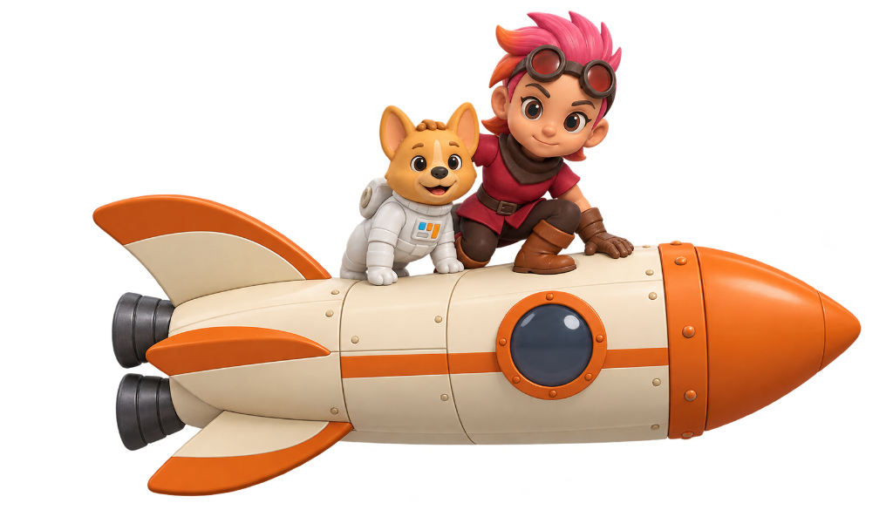

Every shadow. Every angle.
At millisecond precision.
Active perimeter defense.
Zero delay. Zero breach.

Serverpod operates as the real-time nervous system of the entire security grid. By bypassing sluggish polling and heavy external brokers like Redis, Serverpod's native WebSocket message bus multiplexes high-frequency telemetry, live camera heartbeats, and threat vectors directly into operator HUDs with sub-millisecond precision. When a perimeter trips, Serverpod broadcasts state changes across thousands of concurrent clients simultaneously—instant, unified, and unbreakable.
Behind every video feed is Serverpod ingesting torrents of raw neural signals from hardware-accelerated computer vision edge nodes. Serverpod's custom RPC serialization ingests massive signal batches without serialization overhead, evaluates active geometric tripwires and weapon detection matrices against active PostgreSQL policies in microsecond cycles, and deduplicates noise before spawning an emergency event.
Serverpod never sleeps. Powered by its native FutureCalls engine, Serverpod acts as an autonomous guardian enforcing strict tactical SLAs. The instant a breach occurs, Serverpod schedules durable, database-backed delayed execution ladders. If an on-duty operator fails to acknowledge a critical threat within seconds, Serverpod automatically wakes itself up in the background, escalates alert severity tiers, triggers sirens, and reroutes priority dispatches to backup command units.
When a crisis erupts, Serverpod dynamically spawns encrypted, isolated dispatch war rooms on demand. Utilizing localized socket channels, Serverpod synchronizes field units, incident commanders, and automated deterrence hardware in real time. Tactical messages, operator acknowledgments, and audio-visual evidence are streamed live through Serverpod's message bus, ensuring absolute zero-latency situational awareness.
Serverpod provides the ironclad foundation for all forensic and multi-tenant compliance. Over 30 strongly-typed YAML schemas compile into zero-leak database models managing cameras, zones, and security personnel. Every operational override, rule change, and forensic clip is committed through Serverpod's atomic transaction engine to an immutable audit ledger—guaranteeing courtroom-ready compliance and absolute physical facility isolation.
Multi-stream ingest captures RTSP camera feeds across all facilities via WebRTC and WebSocket bridges, piping raw video frames directly into low-latency memory buffers.
Hardware-accelerated YOLO and MediaPipe pipelines evaluate motion vectors, perimeter breaches, recognized weapons, and unauthorized personnel in real time.
Detections exceeding severity thresholds instantly fire events to the backend bus, spawning incident logs, triggering audio-visual warnings, and updating operator consoles.
Automated facility rules execute lockdown sequences, seal motorized doors, activate zone alarms, and restrict access credentials without requiring human latency.
High-priority incident dossiers, live camera feeds, and facility coordinates are simultaneously routed to field guards, response teams, and emergency personnel.